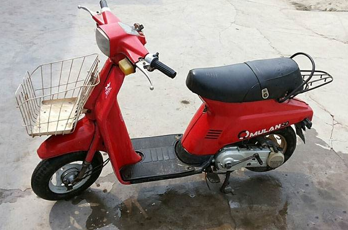

任何一个行业的发展，都要经历四个阶段：一是暴利阶段，这是起始阶段，也是创业者时时挂在嘴边的——“蓝海”。二是逐利阶段，这是竞争阶段，这个阶段的市场大多是无序的，也是逐利的资本大量涌入的阶段。三是垄断阶段，行业发展到这个阶段，基本已经趋于成熟。就像15年团购、打车软件，如今都已经步入这个阶段。四是衰亡阶段：历史的车轮滚滚向前，新事物不断替代旧事物，这是千古不变的命题。就像纹桃大数据所表现的，前两年棋牌游戏市场PC还是主流，而如今基本已经没人咨询了。
棋牌游戏行业当然也无可避免地要经历这四个阶段。在行业发展的过程中，有的率先入局风光一时，却在面临抉择时棋差一招，一蹶不振；有的锐意进取，打破固有模式，赢得掌声与财富；当然，更多的是倒在创业路上的无名白骨，甚至都不足以成为人们口中的谈资。从1998到2017，让纹桃（微信公众号：wanghukeji）带你们了解中国棋牌游戏十九年的跌宕风云。
联众世界
在某种意义上来说，联众世界见证中国棋牌游戏的发展。1998年，鲍岳桥、简晶、王建华靠着江明科技50万的借款，掀开了中国棋牌游戏的序幕。这三位创始人，鲍岳桥喜欢围棋，简晶喜欢游戏，而王建华则有开发经验。当然，他们三个还有一个共同的爱好：打牌。
联众游戏
1998年6月，中国首个网络棋牌游戏中心正式面世，而创始人鲍岳桥，也被行内人称为中国棋牌游戏之父。与此同时，未来公共棋牌行业领域的另一位霸主——腾讯，还没有在深圳的工商局注册。QQ游戏大厅，更是于2003年才正式上线，比联众足足晚了五年。当时间来到2003年的时候，联众已经是当时世界上最大的网络游戏娱乐网站，注册用户8000万，同时在线人数40万人。而据CNNIC公布的数据，截止到2002年12月31日，中国网民的数量才5910万。
创业之始
鲍岳桥他们三人可以算得上是中国最早接触互联网的一批人。早在1996年，他们就上网了。他们都是程序员出身，简晶喜欢玩MUD，鲍岳桥喜欢下围棋。到1998年，玩网络游戏已经成为他们生活的一部分。他们一边下棋一边讨论做什么，简晶突然提出，可以做在线棋牌游戏。他认为游戏网站是所有网站里最吸引用户的，能够把用户锁定；围棋、桥牌类游戏长盛不衰，不会消亡；做别的需要的条件太多，做这个只要有技术就行，最能体现自己的优势。至于公司怎样生存，他们简单的想法是，业余接一些“短平快”小项目，养活自己。至于公司股权，也是简单的三人平分。
联众刚成立的时候，办公地点是在北京西郊外马连洼，鲍岳桥、简晶、王建华三个人挤在两个小办公室。当时只有王建华编程经验多一点，鲍岳桥和简晶对于windows编程基本等于零。可凭借着一腔的创业热情和强大的学习能力，游戏大厅的开发进度非常快。王建华负责服务器端编程，鲍岳桥负责“游戏大厅”的开发，简晶负责具体游戏的设计。
从98年大年初二项目正式启动，到98年5月，已经有三个游戏成型，基本上已经能玩了。后来接受采访的时候，鲍岳桥说那会为了提高工作效率，节约在路上的时间。他和王建华一人弄了一个木兰小摩托，公司家里两头跑，每天都是风尘仆仆的。

木兰小摩托
推广问题
1998年6月4日，联众游戏正式上线，上线的第一个面临的问题就是推广。那会互联网广告可不像如今，有这么多渠道，百度和腾讯都还没成立呢。当然，就算有渠道他们也没钱。没办法，三个人只能发挥自身力量四处找网友，拉他们过来看看。陆陆续续有一些人来了，大都是抱着“看看鲍岳桥他们又做了些什么”的想法来的。由于大家上来的时间段不同，谁也碰不上谁，游戏基本上玩不起来。于是联众在首页贴出一个通告：“希望大家集中在中午过来，这时人比较多，我们自己也在。”
推广第一次出现转机是在6月18日，东方网景在首页为联众开通做了一条广告，那天联众的点击次数超过了1000次。发现这招挺管用，三个人就去很多BBS贴了很多广告帖子。为了庆祝玩家“坐满8张桌子”，鲍岳桥还特意将那张网页保存下来，作为纪念。后来，一些媒体陆续开始报道联众。一个特明显的事实是，报道发表当天一定会让联众多出几十个登录者，于是鲍岳桥在记者采访完，总不忘叮嘱记者一定要在报道中将联众的网址写上。 12月31日，联众同时在线的人数终于突破了1000人。
名人效应
围棋游戏一直发展得很慢，玩“拖拉机”的人已经有几十个了才开始有人下围棋。当时国内有六七个围棋站点，人气排名时根本不用考虑联众。联众请来了方天丰八段来到联众。当时在大厅贴出通告说方天丰要来，没人相信；等方天丰真的来了，也没人愿意和他下棋。没办法，鲍岳桥只能面对面在网上先和方天丰下一盘，方天丰让鲍岳桥7子，鲍岳桥赢了。在一边看的玩家说，不是鲍岳桥下得好，而是“所谓”的方天丰下得太差。于是，就把联众公认的围棋高手找来和方天丰下，方天丰让了对方4子，方天丰赢了。大家终于认可他就是方天丰，都抢着要和方天丰下，一共下了三四盘棋，战况空前激烈。
方天丰八段
鲍岳桥从此意识到了名人对于联众的意义，就通过方天丰在海淀棋院找到了女子职业三段胡晓玲，让她周六周日下指导棋，联众付一些费用。今年，纹桃（微信公众号：wanghukeji）的荣耀平台还有一个五子棋的指导费版本上线，也算是致敬前辈。到后来，余平六段也经常在联众下棋，发展了很多弟子。有时余平会组织一帮人去别的围棋站点挑战，别的网站被“杀”之后，也来“报仇”。一来二去，联众围棋的人气旺起来了。 1999年5月，联众同时在线人数达到5000人。其实现在看来，这不就是棋牌+直播最原始的雏形么。搞定一个意见领袖，制造话题，吸引流量。
融资之路
1999年5月20日，联众作价500万元，卖给了中公网79%的股份。一星期之后，有人来找，愿意联众作价3000万元来买。出让联众股份的过程，对鲍岳桥三人来说是个痛苦的过程。从1998年12月开始谈，一直谈到1999年5月，还没个结果。三人都很希望这个痛苦的过程早点结束，他们是写程序的，不是谈融资的。所以，当中公网老板一口答应联众价值500万元的时候，三人觉得中公网很爽快，顿生好感，既然人家老板都这么爽快，三人觉得自己这边没道理扭扭捏捏的。三人明白，虽然再等一段时间价钱可能卖得更高，但也有可能根本卖不出去，他们已经在融资的过程中碰过太多的壁。三人已经一年半没给自己开工资了，所有的积蓄差不多快用光了。
2004年，联众嫁入豪门，成为韩国最大的网络游戏集团NHN旗下子公司，大量的韩国网游资源可以移植过来，无论是产品、资金，还是人才，都达到了巅峰。在NHN拿到的50%股份中，包含海虹转让的29%股份以及三位创始人鲍岳桥、简晶、王建华的全部股份即21%，总价1亿美元，三位创始人均各自套现1400万美元。这个时候，应该是联众最辉煌的时候，拥有2亿注册用户，月活跃用户1500万，最高同时在线人数60万，在中国、美国、日本、韩国架设有服务器。
韩国最大的网络游戏集团NHN
巅峰之后
而在巅峰之后，联众却面临着巨大的危机。其实联众本身的发展战略并没有太大的问题，只是他迎来了史上最强大的对手——腾讯帝国。2003年，QQ游戏推出第一个版本，拥有打牌升级、四国军棋、象棋三个游戏。鲍岳桥上去玩了一下，觉得不过尔尔。但后面的事大家都知道了，QQ游戏步步为营的细节创新，结合强大社交平台上的海量用户和病毒式的传播分享，逐渐后来居上，实现了对联众的超越。
2014年6月，联众在香港联交所主板上市，至此联众世界已经走过了16年的风风雨雨。写到这里，笔者其实有很多感触，从曾经的大名鼎鼎，到如今很多初入棋牌行业的新人都不一定知晓，实在令人唏嘘。
好了，《中国棋牌：十九年的跌宕风云》——联众世界篇，告一段落。下一篇的主角是谁，大家不妨在评论区里留言讨论。纹桃科技致力于棋牌游戏开发13年，拥有大量开发运营经验和大批成功案例。
想打造一款迅速盈利的棋牌游戏，欢迎咨询电话热线：18711739336
了解更多棋牌游戏行业信息：在线咨询>>


游戏产品
PRODUCTS

售后服务
SERVICE

技术支持
TECHNOLOGY

运营指导
OPERATING